Clouds Above the School
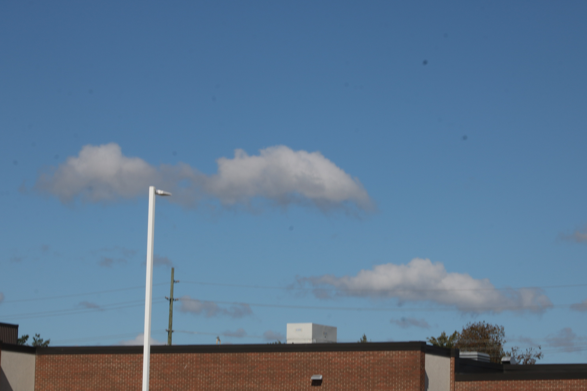
Clouds floating above the school building. Taken using a telephoto lens.
Dark Sun
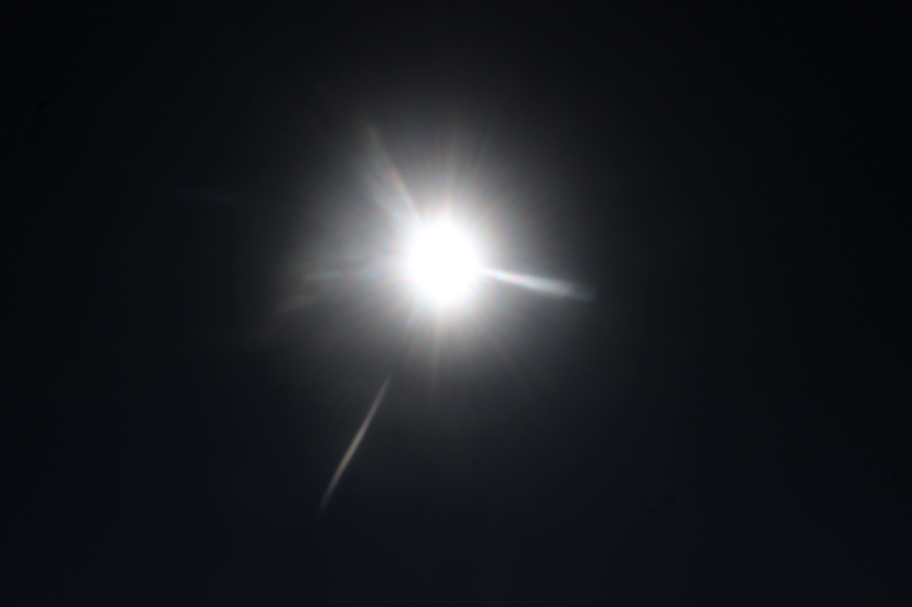
A darkened view of the sun.
Facebook Buddy
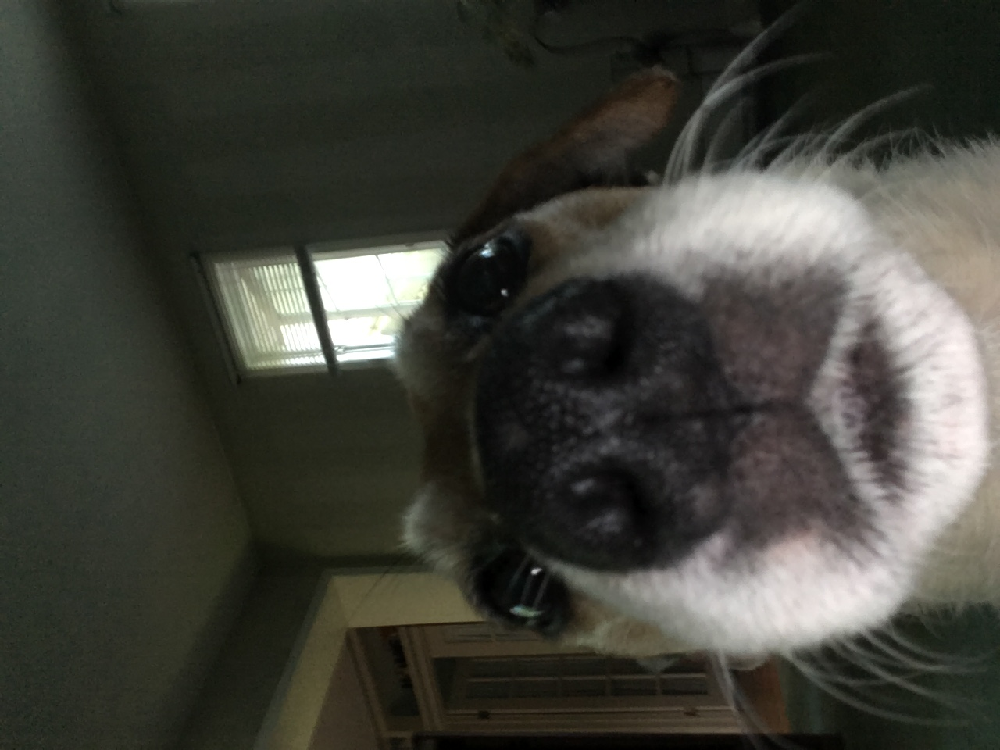
Buddy, please stop stealing my phone. You look like an old person taking a profile picture.
Objects on the Floor
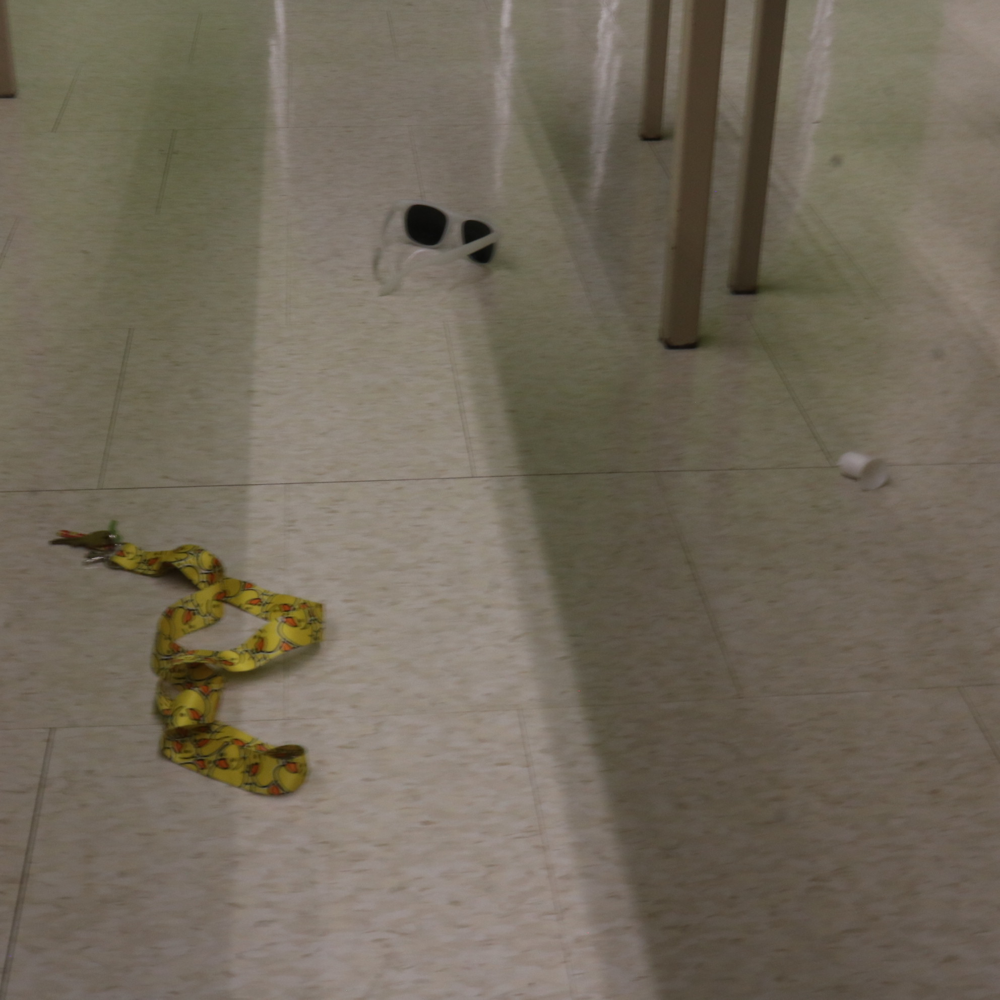
Objects resting on the floor.
School Supplies
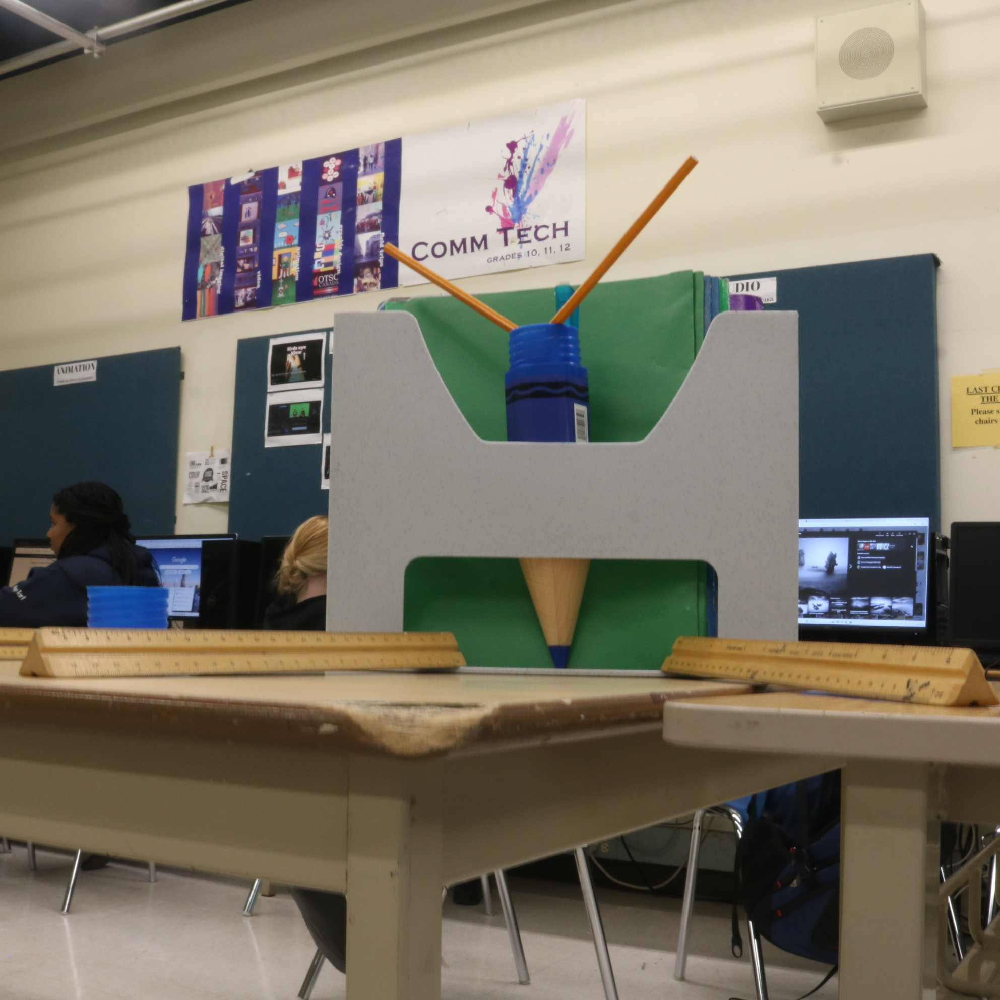
School supplies photographed in the classroom.
Sun
A photograph of the sun.
IMG_3503
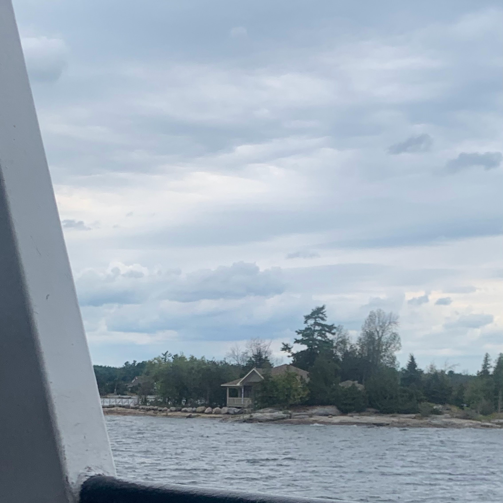
Add your caption here.
Snowy Tree
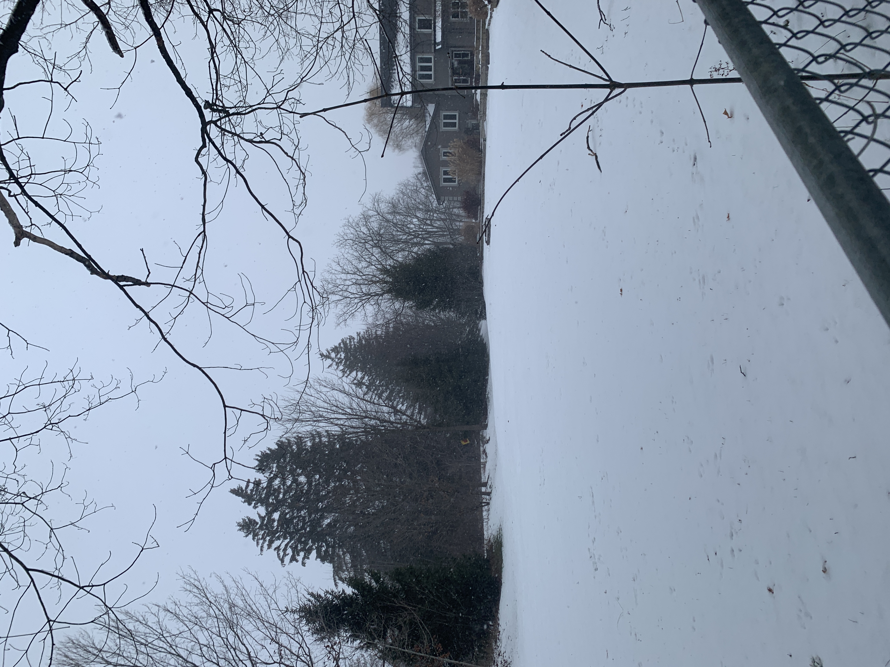
A tree covered in snow.
Roadside Tree
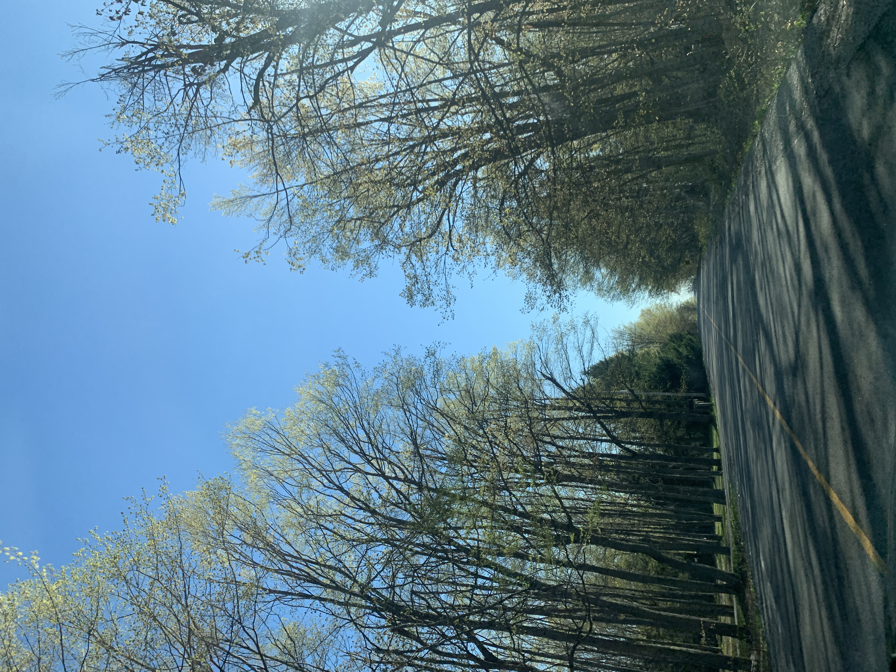
A tree photographed near the road.
Framing
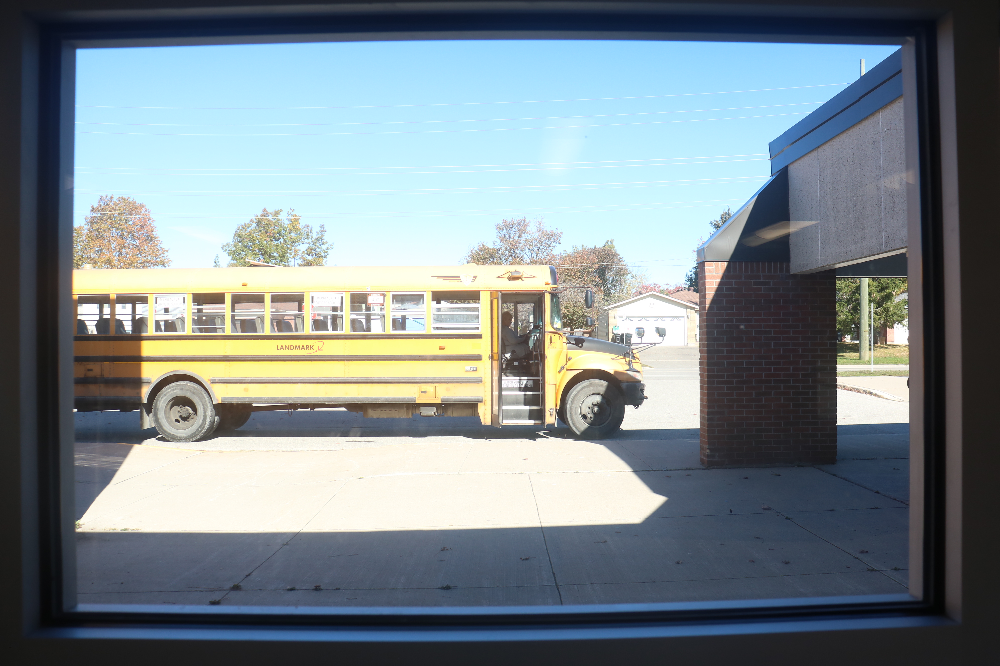
A school bus viewed through a window frame. The window creates a natural frame around the subject and draws attention to the bus.
Rule of Thirds

The front entrance of the school photographed using the rule of thirds. The building, trees, and parking area are positioned to create balance throughout the composition.
HNI_0057
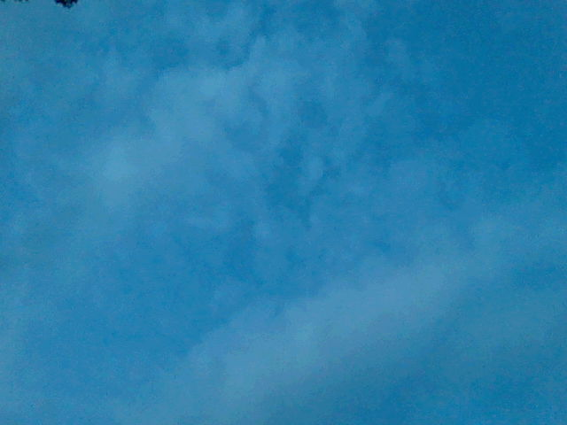
Clouds photographed using a Nintendo New 3DS XL. The image captures subtle cloud textures and variations in the sky.
Umbrella Studio Setup
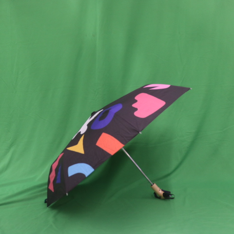
A studio photograph of a patterned umbrella positioned against a green screen backdrop. The image explores controlled lighting and product photography techniques.
Leading Lines

Wooden bleachers guide the viewer's eye toward the sports field and horizon, demonstrating the use of leading lines in composition.
Stadium Lights
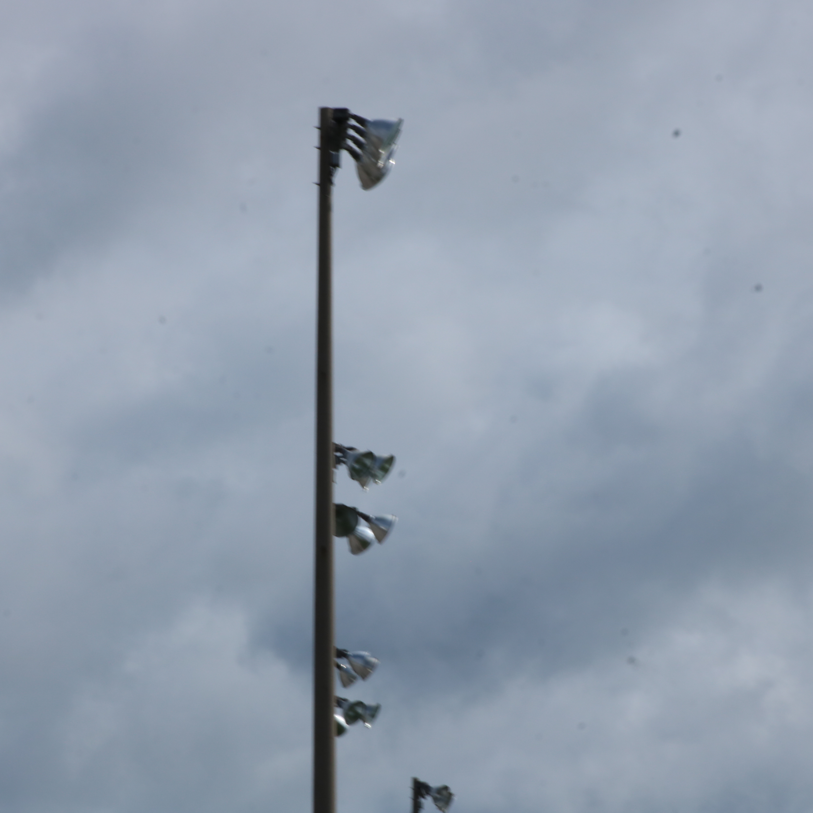
Stadium lights rise into a cloudy sky, creating a minimalist composition that emphasizes shape, scale, and contrast.